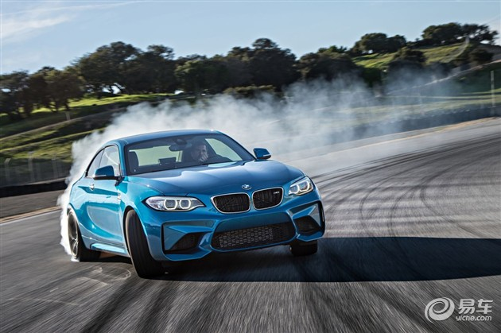
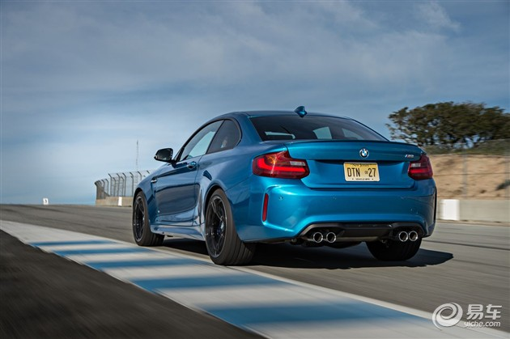
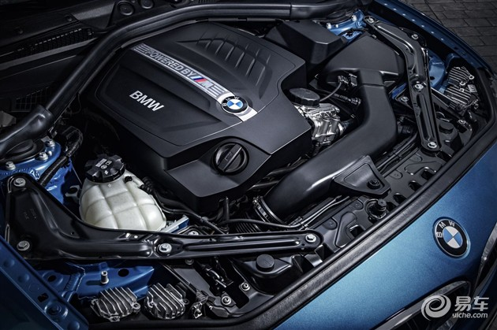
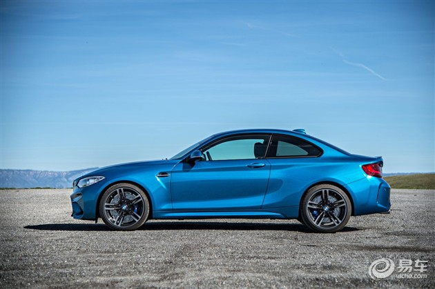
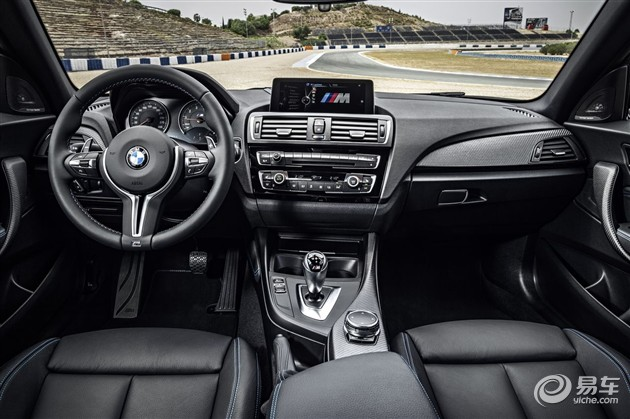

NEWS
宝马M2官方预售65万元 搭3.0T/4.3秒破百
2016年03月10日 17:26 来源：易车 作者：谢迪
3月10日，宝马官方正式发布了入门级全新双门轿跑车宝马M2的预售价。新车预售65万元，即日起已开始接受预定。宝马M2搭载3.0T 涡轮增压发动机，并拥有与宝马M4相同的4.3秒破百的加速时间。
  关于M2的动力：
宝马M2搭载N55双涡管单涡轮3.0T 直列六缸发动机，最大功率为272kW，峰值扭矩为465Nm，匹配7速双离合变速器。新车可在4.3秒完成0-100km/h加速与M4相同，且百公里油耗仅为8.1升。此外，M2还配备了超增压（Overboost）功能，可在短时间内将峰值扭矩提升至500Nm。
 作为宝马“M”家族的新成员，M2配备了19英寸M双轮辐铝合金轮圈、双边四出M专属尾喉、镶嵌M Logo的多功能运动型座椅、带换挡拨片的全新M运动方向盘、M特性组合仪表和M专属换挡杆等身份特征。